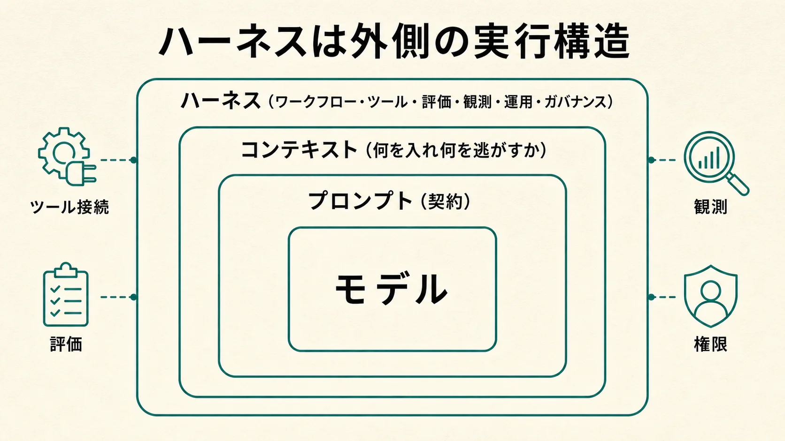
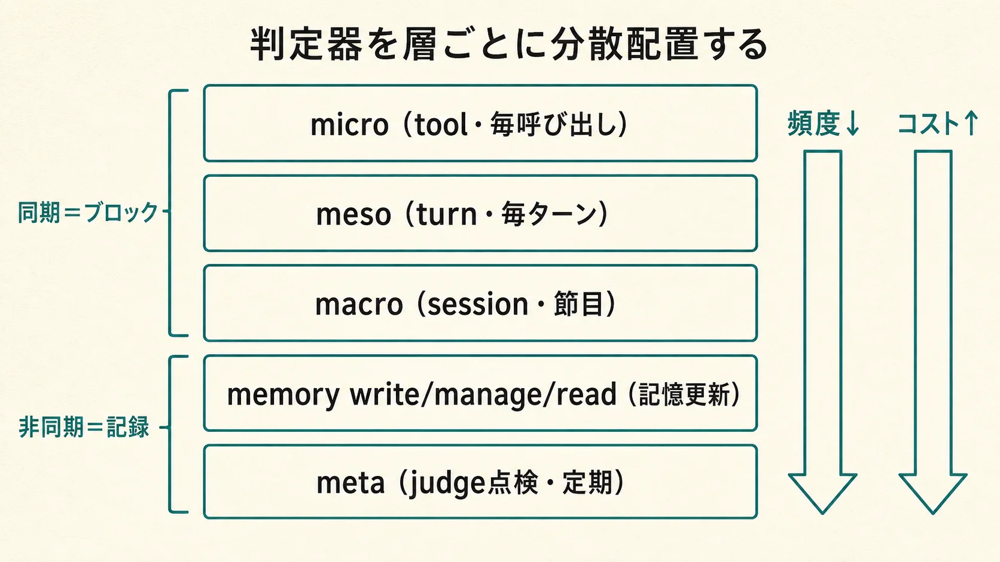
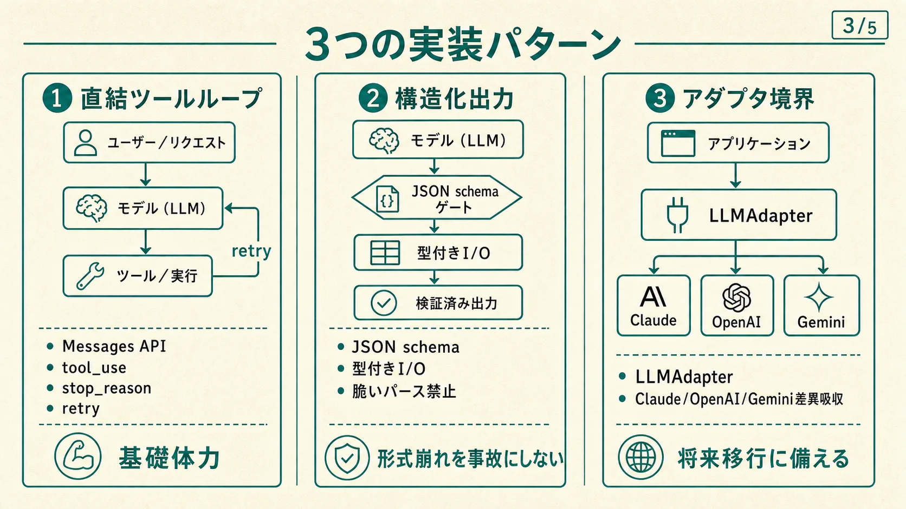
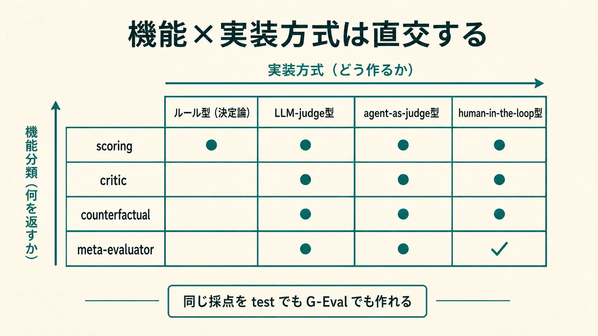
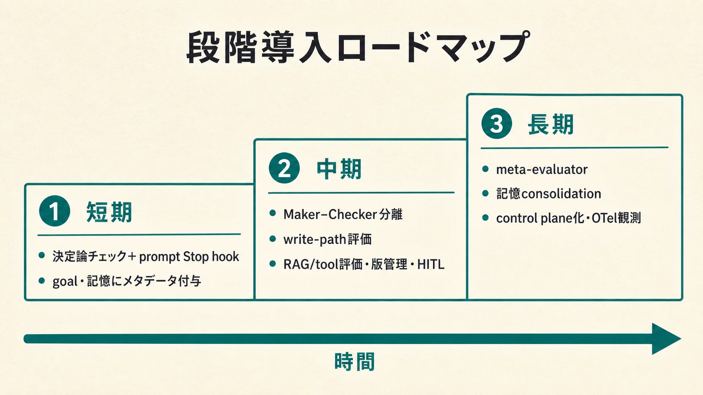

マイクロ層
1回の推論呼び出しを壊れにくくする層。system prompt、tool schema、構造化出力、stop reason、token budget、prompt cachingを契約として扱う。代表的な失敗は形式崩れ、隠れたtruncate、コスト肥大、未処理のrefusal。
prompt as contract schema firstHarness research synthesis 1 of 3
LLMハーネスを「モデルの外側にある制御可能な実行基盤」として定義し、Claude中心の設計原語、micro/macro/metaの三層、実装パターン、Evaluatorの分類、評価・安全・コスト・ガバナンス、段階導入までを一枚の設計図に統合する。
この定義の要点は、モデル性能とシステム性能を分けることにある。Claudeを中心に組む場合でも、実際の品質はMessages API、Agent SDK、Managed Agents、MCP接続、Web検索、コード実行、Computer Use、プロンプトキャッシュ、バッチ処理、構造化出力、引用付き検索結果をどう編成するかで決まる。つまり「Claudeを呼ぶ」ことではなく、「Claudeが安全に見て、考え、動き、止まり、記録を残せる実行系を作る」ことがハーネスエンジニアリングである。

ハーネス論では、モデルそのものの学習方法（RLHF・Constitutional AI・InstructGPT・DPO）と、モデルを包む推論時の基盤（LangGraph・Haystack・LiteLLM・Langfuse・Managed Agents・MCP）を分ける必要がある。両者を混同すると「モデル変更」と「システム変更」の責任分界が曖昧になる。
実務でもっとも有用な見取り図は、マイクロ層・マクロ層・メタ層の三層に、オーケストレーション・評価・安全・データ・アダプタ・ツール利用・観測・コスト／レイテンシ・ガバナンスを横断セグメントとして重ねる整理である。
1回の推論呼び出しを壊れにくくする層。system prompt、tool schema、構造化出力、stop reason、token budget、prompt cachingを契約として扱う。代表的な失敗は形式崩れ、隠れたtruncate、コスト肥大、未処理のrefusal。
prompt as contract schema first複数ターン、RAG、ツールループ、サブエージェント、承認、メモリーを束ねる層。非決定的なモデルを決定的なワークフローで囲う。代表的な失敗はツール誤選択、状態破損、間接プロンプト注入、長期ドリフト。
workflow toolsルーティング、評価、監視、ガバナンス、継続改善を扱う層。trace、eval、incident、policy updateがここに入る。代表的な失敗はベンダーロック、評価欠落、ガードレール不在、運用不能。
evals governanceEvaluator（判定器）の配置を1枚に畳むと下表になる。上から下へ頻度が下がりコストが上がる。基本の振り分けは「同期層（ブロック権あり）で不可逆を止め、非同期層（記録専用）で軌跡を残す」である。

| レイヤー | 何を評価するか | Claude Code実装 | 独自ハーネス実装 | 頻度・コスト |
|---|---|---|---|---|
| micro（tool） | 個々のtool呼び出しの妥当性・境界逸脱。決定論で割り切れる範囲 | PreToolUse hook（block可・command型で決定論）／PostToolUse（additionalContext追記） | pre/post-toolミドルウェアgate（regex／allowlist／policy） | 最低／毎tool呼び出し |
| meso（turn） | 1ターンの成果と暫定完了判定（transcriptに surface された証拠のみ） | prompt型Stop hook／/goal（tool-less・小型高速モデル＝既定Haiku）確認済み | turn-end gate（単発LLM critic） | 低〜中／毎ターン |
| macro（session） | セッション／ワークフロー全体の達成・実地検証（実コマンド・多票・敵対） | agent型Stop hook（ツール可）／subagent reviewer／dynamic workflow多票 | session-end gate、Agent SDKの三重cap（max_turns／max_budget_usd／no-progress） | 高／節目（commit・push） |
| memory write/manage/read | 保存候補のpromote/hold/reject/merge/supersede、consolidation、再利用時の再ランク | MEMORY索引の再ランク、/loop・scheduled taskでの再整理 | write/retrieve/consolidateミドルウェア、quarantine隔離 | 中／記憶更新・想起ごと |
| meta | judge自身のバイアス・drift・calibration | gold setを定期投入する別ワークフロー（scheduled task／別subagent） | meta-evaluatorサービス、回帰スイート、採点経路の封印 | 最高／最低頻度（定期点検） |
Claude中心ハーネスの実装は少数の定番に収束する。まず直結で基礎体力を作り、形式が崩れると事故になる箇所を構造化出力で固め、将来の移行をアダプタ境界で吸収する。

最初に基礎体力を作る構成。tool loop、retry、approval、logging、fallbackをアプリ側で握る。ここでの原則は stop_reason をアプリケーション・プロトコルとして扱うこと。tool_use／pause_turn／max_tokens／refusal ごとに継続・再送・ツール実行・フォールバックを分岐させる。
分類・リスク判定・フォーム生成など形式崩れが事故になる箇所では、正規表現や脆いJSON修復に頼らずschema-firstにする。Anthropicは「常に妥当なJSON schemaに従う必要があるならStructured Outputsを使うべき」と明示している。
形式崩れを事故にしないプロバイダSDKをアプリ中枢に撒かず、自前のLLMAdapter境界を切る。吸収すべき差はメッセージ形式・ツール呼び出し表現・ストリーミング・構造化出力・長時間ジョブ・キャッシュ／バッチ・評価連携。比較は「どのモデルが賢いか」ではなく「どのハーネス原語が必要か」で行う。
while True:
resp = client.messages.create(model=..., tools=TOOLS, messages=messages)
if resp.stop_reason == "tool_use":
# ツール実行 → tool_result を messages に積んで continue
...
continue
if resp.stop_reason in ("max_tokens", "pause_turn", "refusal"):
handle_special_stop_reason(resp) # 途中中断を成功扱いにしない
break
print(render_final_answer(resp)); breakハーネスを運用可能にするには、会話ログだけでなく、PromptVersion・ModelConfig・ToolSchema・Trace・ToolCall・Retrieval・EvalRun・EvalResult・Policy・Incidentを別物として永続化する。この分離がないと、後の事故調査やモデル移行で原因と責任が追えない。trace-first設計（LangSmith・Langfuse・Arize・OpenInference）が共通してこの構造を採る理由である。
Evaluatorとは、ある時点の出力・状態・軌跡・記憶更新候補に対して、継続／停止／採用／棄却／修正方向を決める判定器である。単なる採点器ではなく二つの顔を持つ。第一にループの遷移関数であり、判定が「No」を返すこと自体が次ターンへの指令になる。第二に長期記憶の政策エンジンであり、記憶の昇格・保留・却下・忘却を制御する。
この役割は用語が統一されていない。設計時は次の対応表で語を正規化する。
| 別名 | 主な文脈 | 典型verdict | ニュアンス |
|---|---|---|---|
| grader | Anthropic eval / OpenAI graders | pass/fail + score | 性能の一側面を採点。taskごとに複数持ちうる |
| judge（LLM-as-a-Judge） | MT-Bench系 | score / pairwise勝者 | ルーブリック評価。位置・冗長性・自己優遇バイアスを持つ |
| verifier | grading logic / TrustMem | pass/fail・coverage/preservation/faithfulness | 正しさ／整合性の検証。記憶遷移verifierはwrite-pathの代表 |
| critic | Self-Refine系 | critique + next-directive | 「何が悪いか／次に何を直すか」を返す |
| reward model | RL文脈 | scalar reward | 方策学習の信号。Goodhart・報酬ハッキングの対象 |
| policy gate | security-guidance / auto mode | allow/block・promote/hold/reject | 実行／保存の可否ゲート |
設計空間の骨格は、「何を返すか（機能分類）」と「どう作るか（実装方式）」が直交する点にある。あるEvaluatorは〔機能 × 実装方式 × 経路〕の三つ組で特定される。たとえばscoringはユニットテスト（ルール型）でもG-Evalスコア（LLM-judge型）でも実装できる。この直交性を混同すると「厳密さが欲しい（実装方式の要求）」と「批評が欲しい（機能の要求）」を取り違える。

実装方式は「どの基盤で判定を作るか」で、コスト・再現性・誤魔化し耐性が段違いに変わる。Claude Code上の対応と確信度を併記する。
| 実装方式 | 定義 | Claude Codeでの対応（確信度） |
|---|---|---|
| ルール型（決定論） | exact match / schema / policy / test / lint | Stop hookのscript判定・PreToolUse block 確認済み |
| LLM-judge型 | ルーブリックに基づくモデル評価 | prompt hook・/goalのevaluator（既定はHaiku系small fast model、tool不可、transcript上の証拠のみで判定） 確認済み |
| agent-as-judge型 | ツール／コマンド／ファイルを見て実地検証 | type: "agent" hook（実地検証可） 確認済み／ターン数上限値は 未確認（要実機確認） |
| human-in-the-loop型 | 人間承認点を明示的に埋め込む | permissions / auto modeの承認点 高確度（記憶のpromote/deleteへの明示的HITL公式機構は資料上未確認） |
選定の優先順位は、①証拠がtranscript／environmentに落ちるものはルール型を最優先 → ②ルール化できない品質はLLM-judge（作業モデルと分離したfresh／別モデルで自己優遇を断つ） → ③実地検証が要る箇所だけagent-as-judgeを節目で → ④破壊的・不可逆・高機微な採用／削除はhuman-in-the-loopを最終ゲートに → ⑤単独でなく合成（cheap→expensiveのカスケード）。
verdictを自由文でなく列挙へ落とすことが、ループの自動分岐と監査可能性の前提になる。
Verdict =
| Loop { continue | stop, reason } // 遷移制御
| Score { pass: bool, score: float, metrics } // 合否 + 採点
| Critique { defects: [...], next_directive } // 批評 + 次指令
| MemoryOp { promote|hold|reject|merge|supersede, target } // 記憶政策| 事象 | 最初に見るもの | 恒久対応 |
|---|---|---|
| schema崩れ | traceとraw response | structured output、validator、schema簡素化 |
| ツール誤呼び | tool call logs | tool description、required引数、BFCL型の自社ツールベンチ |
| RAG幻覚 | retrieval trace | retriever改善、rerank、faithfulness監視 |
| prompt injection | source context、MCP、search input | 事前分類、ソース分離、承認必須化、出力無害化 |
| コスト急増 | token/costダッシュボード | effort調整、cache、batch、routing、予算アラート |
| モデル更新後の退行 | offline eval diff | canary、旧版退避、migration checklist、回帰データセット |
Claude中心ハーネスの安全は「Claudeが安全か」ではなく、Claudeの前後に何層の検査と承認を置くかで決まる。学習時アラインメント（RLHF・Constitutional AI）はモデルの素性を決めるが、本番の安全性を保証しない。推論時には別の安全層——軽量モデルの事前スクリーニング、構造化出力での単純分類、Computer Use時の追加確認、ストリーミング拒否の処理、RAG経由の間接プロンプト注入検査——が必要になる。高リスク操作は同期のmicro/macroゲートで止める。
見落とされやすいのは、高性能モデルが常に高コストとは限らない点である。場合によっては low thinking のほうが再試行減少により総コストを下げる。1回の出力トークンを減らすことと、タスク完了あたりの総コストを減らすことは別問題で、quality-per-dollarで測る。effort・prompt caching・Batch APIがレバーになる。モデル移行時は見た目の価格表でなく、tokenizer差分を含む実測TCOを見る。
ガバナンスは本番前チェックではなく、本番トレースを評価資産へ戻す継続ループである。方針 → 仕様化（rubric）→ 評価セット化 → オフライン評価 → 本番投入（canary）→ トレース／監視 → 失敗クラスタ → 改善 → 評価セットへ戻す。これはNIST AI RMFの「govern / map / measure / manage」にほぼ対応する。実装としては、リスク分類・モデル／プロンプト／ツールの版管理・traceの監査保存・本番前オフライン評価・本番中オンラインモニタ・変更管理・高リスク操作のHITL・権限最小化・インシデント後レビューを備える。
各設計主張には確信度を付す。確認済み公式docs・コード・実行結果で裏付け／高確度一般に高確度だが未検証／未確認推測・記述なし。
async: trueのhookは非ブロック実行される」まで。非同期からの通知の文書化機構は asyncRewake（exit code 2でClaudeを起こしstderrをsystem reminder提示）。「同期＝ブロック可／非同期＝記録専用」の配置原則は保持する。確認済み（asyncRewake）type は正しくは5種——command / prompt / agent / http / mcp_tool（mcpではなくmcp_tool）。/goal がtool-less・既定Haiku・約4000字上限、Agent SDKの max_turns／max_budget_usd、/loop のcron変換・7日失効、subagents／agent teams／dynamic workflowsの16並列・総計1000。確認済み
いずれもClaude Codeのevolvingな機能に関わるため、実装着手時は最新の公式docsで仕様を再確認する。
一度に全層を敷かない。決定論とtool-less判定から入り、Maker–Checkerと記憶審査を足し、最後にmeta-evalとcontrol plane化へ進む。

| 段 | やること | Claude Code面 |
|---|---|---|
| 短期 | 決定論チェック（test/lint/型/git status）＋prompt Stop hook／/goal。記憶はストアにprovenance／freshness／scope／timeのメタデータを付与し、write-path evaluatorを1つ挟む | .claude/settings.json のhooksと /goal 条件文 |
| 中期 | Maker–Checker（agent Stop hook／reviewer subagent）＋write-path evaluator＋メタデータ審査。記憶をsemantic／episodic／proceduralに分離、event graphを部分導入 | dynamic workflow多票、Agent SDKのカスケード評価＋三重cap |
| 長期 | meta-evaluator＋consolidation／dreaming＋control plane化（evaluate-write／retrieve／consolidate／forget／outcomeのAPIに境界を保って切り出し、trace_id でobservability／audit trailに接続） | OTel spanでturn／tool／hook／token／costを記録 |
npm test が exit 0」）④judgeを放置しない（gold setで定期点検し採点経路を封印してGoodhart／reward hackingを防ぐ）。
このHTMLは、既存リサーチのうちハーネス総覧とEvaluator設計資料を中心に再構成した。外部リンクではなく、リポジトリ内の調査スナップショットを一次素材として扱っている。★＝中心ソース、○＝部分ソース。
| 資料 | 区分 | このHTMLでの反映先 |
|---|---|---|
| 01-claude-harness-overview.md | ★ | 定義（1章）、三層（2章）、実装パターン（3章）、運用・評価・安全・コスト・ガバナンス（5章） |
| design/00-overview.md | ★ | 統合レイヤリング表（2章）、中心原則（6章）、段階導入（6章）、確信度・未確認注記（5章） |
| design/01-evaluator-taxonomy.md | ○ | Evaluatorの定義・6異名の正規化・機能×実装方式の直交2軸・verdict語彙（4章） |
| 04-evaluator-harness-design.html | 統合ビュー | Evaluator設計パッケージ全体の統合図解（2章・4章から相互参照） |